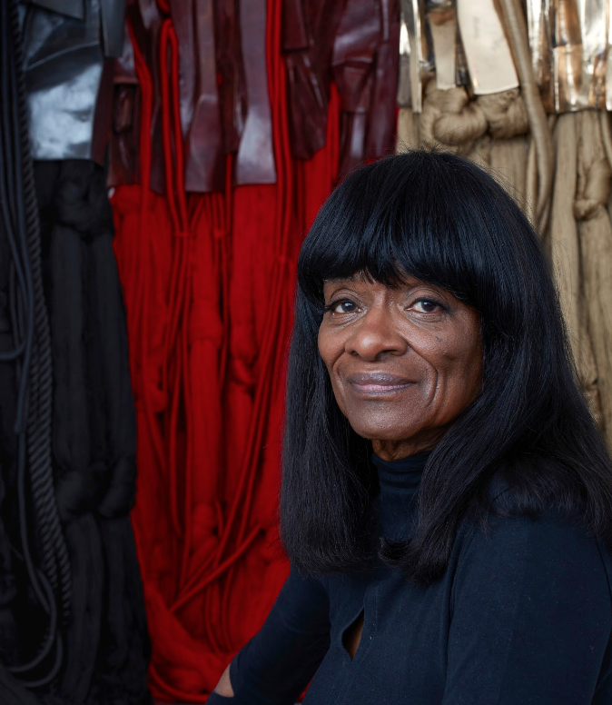
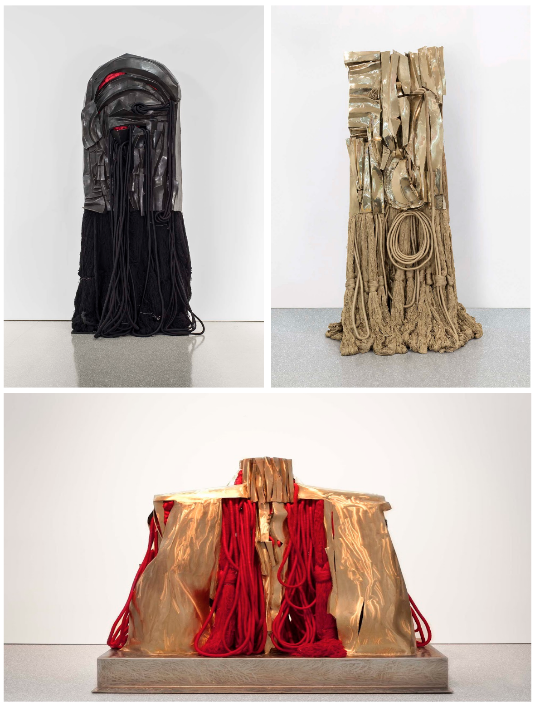

Claude Levi-Strauss stated that “art is the only proof that anything has ever happened in the past.” To me, this is one of the most provocative and truest comments on the role of art that I have ever read or heard. Everything else is hearsay. I believe in the power of art and have devoted my career to its production, often focusing on the history or accomplishments of others.
Throughout the years, my sculptural practice has concentrated on the transformative properties of fiber and metal in monumental-scale sculptural forms. The lives of others have always fascinated me; I think we’re born historical. This inherent curiosity, coupled with my exposure to world cultures, has influenced my work. Over the years, I have dedicated works to Marian Anderson, Anne d’Harnoncourt and most significantly, Malcolm X, completing a series of twenty steles to the civil rights leader. In the 1990s, I completed a series of Monument Drawings, twenty-five works on paper to the lives of known and unknown figures that included Émile Zola, Alexander Pushkin, Man Ray, and Francesco di Giorgio. I am driven by the power of history and my monuments connect the temporal, visual and psychological threads of our shared experience. In essence, I believe memory is everything and it is my hope that I, in some way, can memorialize the lives of people whose values transcend time and place.

The photograph of Barbara is by Grant Devlin. The photographs of her work are courtesy of the artist and the Michael Rosenfeld Gallery.